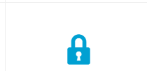

Beautiful designs, powerful features, and the freedom to build
anything you want. WordPress is both free and priceless at the
same time.
Trusted by the Best
38% of the web uses WordPress, from hobby blogs to the
biggest news sites online.
Powerful Features
Limitless possibilities. What will you create?
Customizable
Designs
SEO
Friendly
Responsive
Mobile Sites
High
Performance
Manage
on the Go

High
Security
Powerful
Media Management
Easy
And Accessible
Extend WordPress with over 55,000 plugins to help your website meet your
needs. Add an online store, galleries, mailing lists, forums, analytics, and
much more
Get Started with WordPress
Over 60 million people have chosen WordPress to power the
place on the web they call “home” — join the family.

News From Our Blog
WordPress 5.5.1 Maintenance Release
WordPress 5.5.1 is now available!
This maintenance release features
34 bug fixes, 5 enhancements, and
5 bug fixes for the block editor.
These bugs affect WordPress version
5.5, so you’ll want to upgrade. You
can download WordPress 5.5.1 directly,
or visit the Dashboard → Updates screen
and click Update Now. If your sites
support automatic background updates,
they’ve already started the update process.
[…]
It’s Easy As…
-
Find a trusted web host
and maybe support WordPress at the same time.
-
Download & install WordPress
with our famous 5-minute installation.Publishing has never been easier.
-
Spend some time reading our documentation,
get to know WordPress better every day and start helping others, too.